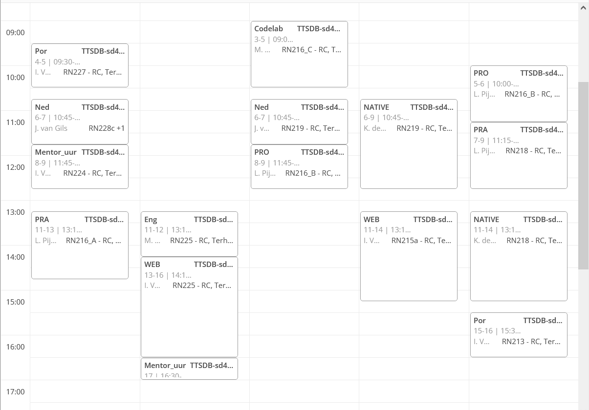

Rooster:
Hier kan je zien hoe ongeveer de rooster van een eerste jaar student er nou precies uitziet. Je hebt soms lange maar ook hele korte dagen, en het langste dat je hier kan zitten is tot 17:00. Maar daar hoef je je nu nog niet zorgen om te maken.
